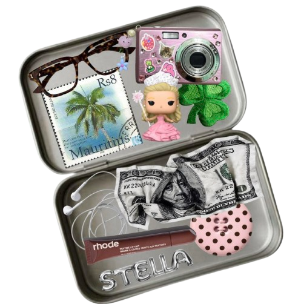

Meet The Designer!
My journey into web development started the moment I discovered HTML — and I was instantly hooked. Turning simple lines of code into real,interactive designs felt like unlocking a new level. With a natural interest in both design and technology, front-end development became the perfect space for me to create,experiment, and bring ideas to life. I’ve since built my skills in HTML, CSS, and JavaScript through further study at Red & Yellow School of Creative Business. As an aspiring front-end developer, I enjoy pushing creative boundaries,exploring new layouts, and designing experiences that feel both modern and engaging. This is just the beginning of my journey — and I’m so excited for what’s next!
